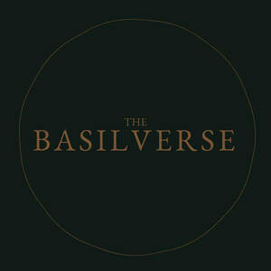

Trade Mark Journal No.2026/010 6 March 2026
UK00004341273 16 February 2026 (3,4,40)
Mark 1
THE BASILVERSE
Mark 2

- Class 3
- Perfume; Fragrances; Perfumery and fragrances; Fragrance sachets; Fragrance emitting wicks for room fragrance; Perfumes; Oils for perfumes and scents; Aromatics for fragrances; Scents; Perfume oils; Potpourris [fragrances]; Fragrance preparations; Aromatics for perfumes; Fragrance refills for non-electric room fragrance dispensers; Colognes; Air fragrance preparations; Body fragrances; Cologne; Household fragrances; Perfume water; Room fragrances; Scented water for fragrancing; Air fragrance reed diffusers; Room perfume sprays; Cedarwood perfumery; Liquid perfumes; Fragrances for automobiles; Perfumery; Scented oils; Perfumed potpourris; Fragrance for household purposes; Natural oils for perfumes; Deodorants for personal use [perfumery]; Body deodorants [perfumery]; Perfume oils for the manufacture of cosmetic preparations; Perfumery products; Aromatic potpourris; Scented soaps; Scented sachets; Fragrant sachets; Perfuming sachets; Perfumed soaps; Eau de cologne [cologne water]; Perfumed sachets; Room perfumes in spray form; Aftershave lotions; Scented body lotions; Perfumed soap; Scented linen sprays; Feminine deodorant sprays; Aftershave balm; Scented oils used to produce aromas when heated; Solid perfumes; Refills for electric room fragrance dispensers; Aftershave balms; Cologne water; Scented body spray; After-shave lotions; Aftershaves; Aftershave; Scented room sprays; Perfumed creams; Fragrances for personal use; Perfumed oils for skin care; After-sun oils [cosmetics]; Essential oils for fragrancing; Aromatic oils for the bath; Essential oils as perfume for laundry purposes; Skin fresheners [cosmetics]; Scented body creams; Scented body lotions and creams; Scented fabric refresher sprays; Perfumed powder; Aromatherapy lotions; Room fragrancing products; Perfumed powders; Sachets for perfuming linen; Linen (Sachets for perfuming -); After-shave balms; Natural perfumery; Incense spray; Aftershave moisturising cream; Scented water; After-shave; Suntan oils [cosmetics]; Aftershave creams; Suntan lotion [cosmetics]; Scented wood; Beauty lotions; Eau de colognes; Scented fabric refresher spray; Incense sachets; Scented bathing salts; Skincare cosmetics; Cosmetics; Moisturisers [cosmetics]; Cosmetics and cosmetic preparations; Hair cosmetics; Anti-aging moisturizers used as cosmetics; Organic cosmetics; Lip cosmetics; Nail cosmetics; Non-medicated cosmetics; Skin moisturizers used as cosmetics; Natural cosmetics; Cosmetics preparations; Cosmetics in the form of lotions; Facial creams [cosmetics]; Beauty care cosmetics; Eyebrow cosmetics; Multifunctional cosmetics; Body creams [cosmetics]; Skin masks [cosmetics]; Functional cosmetics; Facial gels [cosmetics]; Skin care cosmetics; Fluid creams [cosmetics]; Non-medicated cosmetics and toiletry preparations; Cosmetics in the form of creams; Cosmetic hair lotions; Cosmetics for use on the skin; Cosmetic moisturisers; Sunscreens [for cosmetic use]; Cosmetic creams and lotions; Bath powder [cosmetics]; Night creams [cosmetics]; Skin recovery creams [cosmetics]; Body gels [cosmetics]; Body and facial creams [cosmetics]; Cosmetics for the use on the hair; Sunscreen creams [for cosmetic use]; Body care cosmetics; Sunscreen [for cosmetic use]; Creams (Cosmetic -); Cosmetic creams; Cosmetic soaps; Cosmetics containing keratin; Cosmetic skin fresheners; Cosmetics in the form of powders; Hair care lotions [for cosmetic use]; Cosmetics in the form of oils; After-sun lotions [for cosmetic use]; Cosmetic facial lotions; Facial lotions [cosmetic]; Skin care lotions [cosmetic]; Anti-aging creams [for cosmetic use]; Sun protecting creams [cosmetics]; Nail hardeners [cosmetics]; Cosmetic products for the shower; Anti-ageing creams [for cosmetic use]; Smoothing emulsions [cosmetics]; Nail primer [cosmetics]; Perfumed powders [for cosmetic use]; Skin cleansers [cosmetic]; Liners [cosmetics] for the eyes; Skin creams [cosmetic]; Skin creams [for cosmetic use]; Moisturising skin lotions [cosmetic]; Cosmetic creams for the skin; Body and facial gels [cosmetics]; Aromatherapy preparations; Massage oils; Massage oils and lotions; Ethereal oils for fragrancing; Facial massage oils; Body massage oils; Massage candles for cosmetic purposes; Massage oil; Aromatherapy pillows comprising potpourri in fabric containers; Bath oils; Non-medicated bath oils; Bath oils (Non-medicated -); Massage oils, not medicated; Lavender oil for cosmetic use; Non-medicated shower oils; Bath and shower oils [non-medicated]; Bath herbs; Shower oils; Bath oils for cosmetic purposes; Non-medicated oils; Cosmetic massage creams; Non-medicated massage preparations; Distilled oils for beauty care; Facial oils; Mineral oils [cosmetic]; Bath lotions (Non-medicated -); Cleansing lotions; Fragrance sachets for eye pillows; Massage waxes.
- Class 4
- Aromatherapy fragrance candles; Oils for fragrancing; Fragranced candles; Perfumed candles; Candles (Perfumed -); Scented candles.
- Class 40
- Custom blending of essential oils for aromatherapy use.
The Basilverse Limited